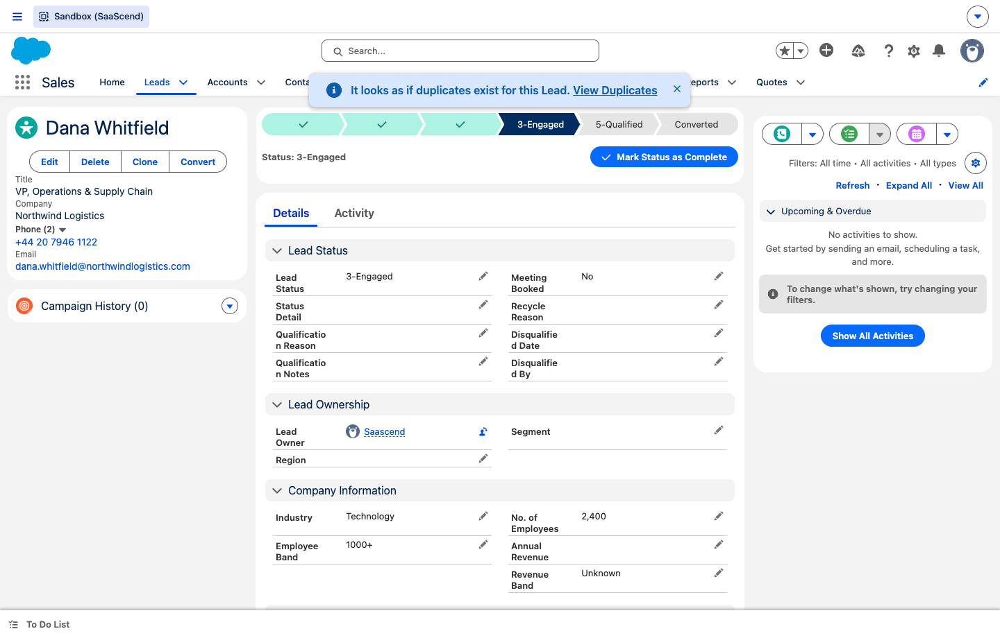
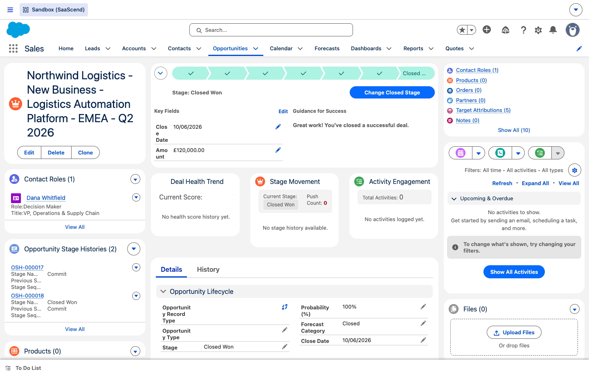
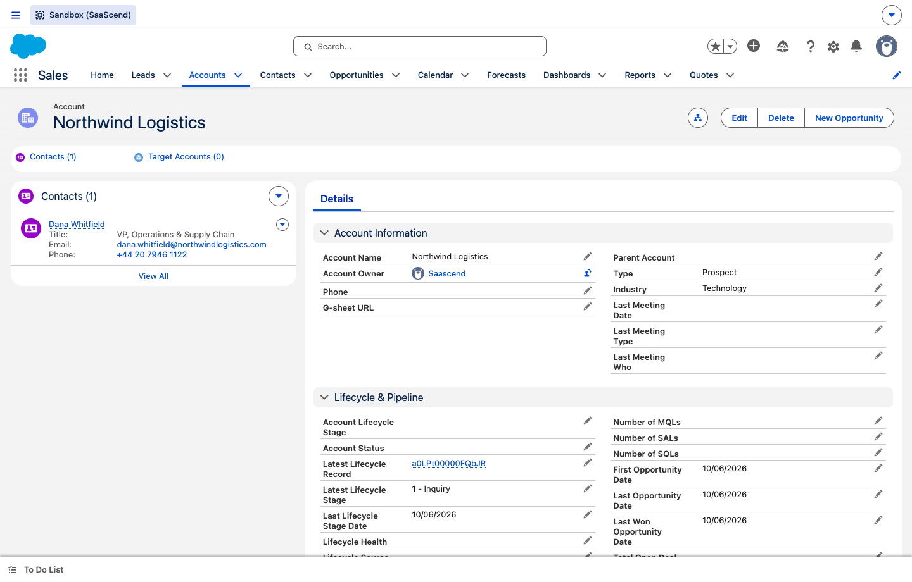
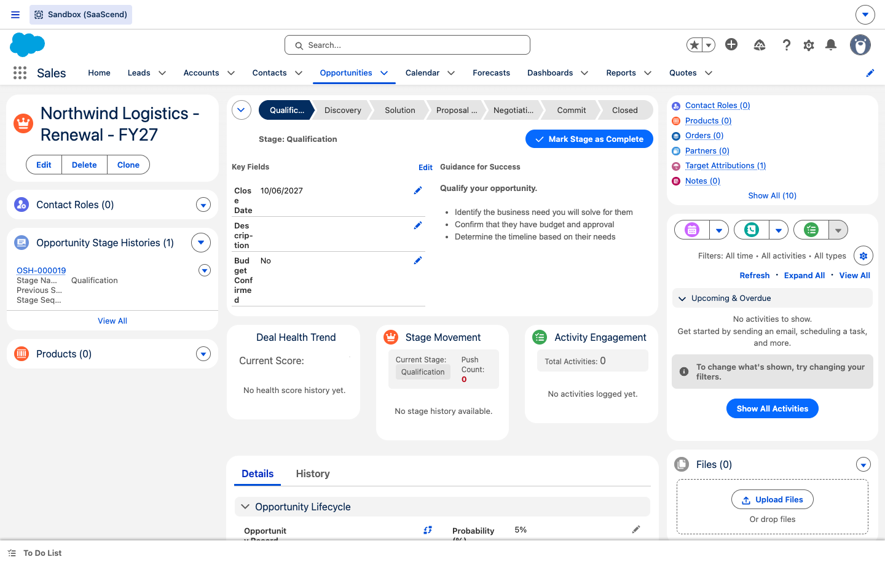

Awareness
A new lead enters your world. Your only job is to capture who they are — the system immediately starts a tracked lifecycle and attributes the source.
- Create or own a new lead — web form, event list, or manual entry.
- Fill the essentials: name, company, title, lead source.
- Nothing else — no manual staging, no scoring by hand.

Education
The lead is nurtured and continuously scored. The system tells you how good a fit this is and how engaged they are — so you spend time on the right people.
- Log activities, calls and emails as you nurture.
- Read the ICP Grade and BANT Score to prioritise.
- Advance the lead to MQL when marketing-qualified.
Selection
Sales accepts the hand-off and qualifies the deal. The lead converts into an Opportunity, and the system carries every scrap of context across so nothing is re-typed.
- Accept the SQL hand-off and convert the lead.
- Use the “New Opportunity” guided button for fast, clean creation.
- Run discovery; fill MEDDPICC and set the Next Step.

Commit
The decisive stage of the bowtie. You drive the deal to close — the system handles the commercial maths, governance, forecasting and commission so the win is clean and auditable.
- Advance through Negotiation → Commit, keeping Next Steps current.
- Confirm the commercials (Recurring Revenue, term).
- Close the deal Won — and pick a Closed Reason.

Onboard
The prospect is now a customer. The system rolls the win up to the account and seeds the renewal, so the relationship starts on a clean, measurable footing.
- Hand off to delivery / Customer Success.
- Run the onboarding kickoff (your Next Step is already set from the win).
- Confirm the account record reads cleanly for the CS team.

Impact
The customer realises value. The system measures engagement and attainment against targets, turning every meeting into a tracked, attributed signal of health.
- Run QBRs and value reviews; log meetings & outcomes.
- Watch account health and attainment dashboards.
- Flag risks early; capture expansion signals.
Every logged meeting becomes a Target Attribution record — the same engine that credits acquisition now measures customer engagement, giving CS and leadership one consistent health signal.
Grow
Expand and renew. The renewal the system seeded at the win is waiting for you, and expansion deals link back so revenue is never double-counted.
- Work the auto-created Renewal opportunity ahead of term.
- Raise expansion deals via the same New Opportunity button.
- Run the renewal QBR; present expansion modules.
